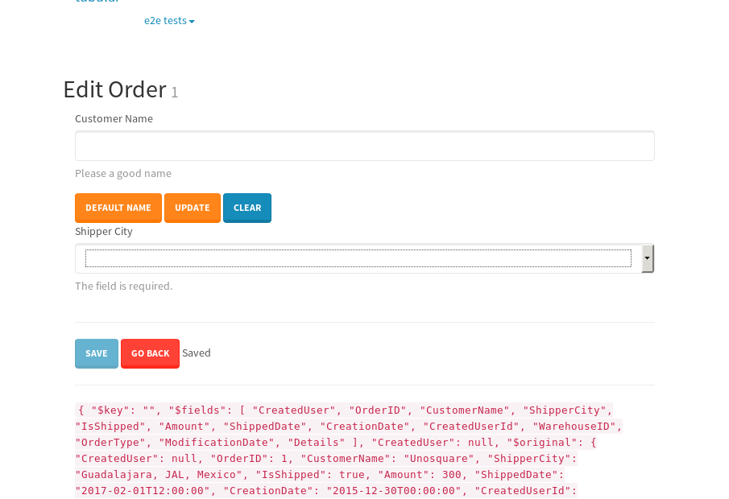

tbColumn.Grid Sorting - 176.107sTests: 5Skipped: 0Failures: 3 should sort data in ascending order then on descending order when sorting by Order Id column - 44.07sExpected '1' to be '500'.✗Expected '20' to be '481'.✗Tests passed: 50.00%should order data in ascending order when click-sorting an unsorted text column - 22.965sTests passed: 100.00%should order data in descending order when click-sorting an ascending-sorted text column - 42.979sExpected 'Advanced Technology Systems' to be 'Vesta'.✗Tests passed: 0.00%should order data in ascending order when click-sorting an unsorted date column - 23.075sTests passed: 100.00%should order data in descending order when click-sorting twice an unsorted date column - 43.01sExpected '12/30/2015' to match /1\/01\/2016/.✗Tests passed: 0.00%
tbEmptyForm - 3.455sTests: 3Skipped: 0Failures: 0 should have an empty required field - 1.855sTests passed: 100.00%should not be able to click on save - 0.027sTests passed: 100.00%should load default value for numeric field - 0.034sTests passed: 100.00%
Tubular Filters.tbColumnFilter - 91.338sTests: 12Skipped: 0Failures: 0 should cancel filtering when clicking outside filter-popover - 7.355sTests passed: 100.00%should disable Value text-input for "None" filter - 5.565sTests passed: 100.00%should disable apply button for "None" filter - 5.618sTests passed: 100.00%should decorate popover button when showing data is being filtered for its column - 10.745sTests passed: 100.00%should correctly filter data for the "Equals" filtering option - 6.686sTests passed: 100.00%should correctly filter data for the "Not Equals" filtering option - 6.733sTests passed: 100.00%should correctly filter data for the "Contains" filtering option - 6.876sTests passed: 100.00%should correctly filter data for the "Not Contains" filtering option - 6.968sTests passed: 100.00%should correctly filter data for the "Starts With" filtering option - 5.687sTests passed: 100.00%should correctly filter data for the "Not Starts With" filtering option - 5.986sTests passed: 100.00%should correctly filter data for the "Ends With" filtering option - 6.11sTests passed: 100.00%should correctly filter data for the "Not Ends With" filtering option - 5.816sTests passed: 100.00%
Tubular Filters.tbColumnDateTimeFilter - 122.618sTests: 12Skipped: 0Failures: 0 should cancel filtering when clicking outside filter-popover - 6.356sTests passed: 100.00%should disable Value text-input for "None" filter - 5.626sTests passed: 100.00%should disable apply button for "None" filter - 5.836sTests passed: 100.00%should clear filtering when clicking on Clean button - 16.481sTests passed: 100.00%should decorate popover button when showing data is being filtered for its column - 10.955sTests passed: 100.00%should correctly filter data for the "Equals" filtering option - 6.359sTests passed: 100.00%should correctly filter data for the "Not Equals" filtering option - 6.243sTests passed: 100.00%should correctly filter data for the "Between" filtering option - 10.811sTests passed: 100.00%should correctly filter data for the "Greater-or-equal" filtering option - 10.705sTests passed: 100.00%should correctly filter data for the "Greater" filtering option - 10.674sTests passed: 100.00%should correctly filter data for the "Less-or-equal" filtering option - 10.654sTests passed: 100.00%should correctly filter data for the "Less" filtering option - 10.802sTests passed: 100.00%
Tubular Filters.tbColumnOptionsFilter - 76.786sTests: 3Skipped: 0Failures: 0 should cancel filtering when clicking outside filter-popover - 7.226sTests passed: 100.00%should decorate popover button when showing data is being filtered for its column - 10.511sTests passed: 100.00%should filter column-elements in accordance to the selected filter when selecting a single option - 47.775sTests passed: 100.00%
Tubular Filters.tbTextSearch - 44.018sTests: 5Skipped: 0Failures: 0 min-chars is not set - 0.089sTests passed: 100.00%should filter data in searchable-column customer name to matching inputted text, starting from 3 characters - 5.935sTests passed: 100.00%should filter data in searchable-column shipper city to matching inputted text, starting from 3 characters - 11.124sTests passed: 100.00%should show clear button when there is inputted text only - 5.609sTests passed: 100.00%should clear filtering when clicking clear button - 15.449sTests passed: 100.00%
tbForm related components.tbCheckboxField - 4.735sTests: 2Skipped: 0Failures: 0 should save changes on "SAVE" - 1.937sTests passed: 100.00%should discard changes on "CANCEL" - 1.486sTests passed: 100.00%
tbForm related components.tbDropDownEditor - 6.475sTests: 5Skipped: 0Failures: 0 should set initial input value to the value of "value" attribute when defined - 0.917sTests passed: 100.00%should show the component name value in a label field when "showLabel" attribute is true - 0.929sTests passed: 100.00%should show a help field equal to this attribute, is present - 0.758sTests passed: 100.00%should submit modifications to item/server when clicking form "Save" - 2.193sTests passed: 100.00%should NOT submit modifications to item/server when clicking form "Cancel" - 1.108sTests passed: 100.00%
tbForm related components.tbTextArea - 9.353sTests: 7Skipped: 0Failures: 0 should set initial input value to the value of "value" attribute when defined - 0.89sTests passed: 100.00%should be invalidated when the number of chars is not in the range of "min" and "max" attributes - 1.436sTests passed: 100.00%should show the component name value in a label field when "showLabel" attribute is true - 0.76sTests passed: 100.00%should show a help field equal to this attribute, is present - 0.747sTests passed: 100.00%should require the field when the attribute "required" is true - 0.859sTests passed: 100.00%should submit modifications to item/server when clicking form "Save" - 2.406sTests passed: 100.00%should NOT submit modifications to item/server when clicking form "Cancel" - 1.479sTests passed: 100.00%
tbForm related components.tbDateEditor - 7.821sTests: 6Skipped: 0Failures: 0 should set initial date value to the value of "value" attribute when defined - 0.818sTests passed: 100.00%should be invalidated when the date is not in the range of "min" and "max" attributes - 1.244sTests passed: 100.00%should show the component name value in a label field when "showLabel" attribute is true - 0.718sTests passed: 100.00%should show a help field equal to this attribute, is present - 0.665sTests passed: 100.00%should submit modifications to item/server when clicking form "Save" - 1.761sTests passed: 100.00%should NOT submit modifications to item/server when clicking form "Cancel" - 1.857sTests passed: 100.00%
tbForm related components.tbTypeaheadEditor - 11.39sTests: 7Skipped: 0Failures: 0 should show an options list when there is an API-info/component entered-data - 1.317sTests passed: 100.00%should select the option clicked - 1.233sTests passed: 100.00%should show a "delete" button when an option/match is selected, and delete the option if button is clicked - 1.758sTests passed: 100.00%should show a label value equal to the component name when "showLabel" attribute is true - 1.002sTests passed: 100.00%should require a value when "require" attribute is true - 1.413sTests passed: 100.00%should submit modifications to item/server when clicking form "Save" - 2.169sTests passed: 100.00%should NOT submit modifications to item/server when clicking form "Cancel" - 1.378sTests passed: 100.00%
tbForm related components.tbSimpleEditor - 9.832sTests: 9Skipped: 0Failures: 0 should set initial input value to the value of "value" attribute when defined - 0.699sTests passed: 100.00%should be invalidated when the number of chars is not in the range of "min" and "max" attributes - 1.076sTests passed: 100.00%should show the component name value in a label field when "showLabel" attribute is true - 0.684sTests passed: 100.00%should set input placeholder to the value of "placeholder" attribute - 0.872sTests passed: 100.00%should validate the control using the "regex" attribute, if present - 0.804sTests passed: 100.00%should show a help field equal to this attribute, is present - 0.662sTests passed: 100.00%should require the field when the attribute "required" is true - 1.077sTests passed: 100.00%should submit modifications to item/server when clicking form "Save" - 2.325sTests passed: 100.00%should NOT submit modifications to item/server when clicking form "Cancel" - 1.02sTests passed: 100.00%
tbForm related components.tbNumericEditor - 9.719sTests: 7Skipped: 0Failures: 0 should set initial component value to the value of "value" attribute when defined - 0.679sTests passed: 100.00%should be invalidated when the entered number is not in the range of "min" and "max" attributes - 1.35sTests passed: 100.00%should show the component name value in a label field when "showLabel" attribute is true - 1.023sTests passed: 100.00%should show a help field equal to this attribute, is present - 0.862sTests passed: 100.00%should require the field when the attribute "required" is true - 0.944sTests passed: 100.00%should submit modifications to item/server when clicking form "Save" - 2.821sTests passed: 100.00%should NOT submit modifications to item/server when clicking form "Cancel" - 1.396sTests passed: 100.00%
tbForm Connection Error NoModelKey - 2.195sTests: 1Skipped: 0Failures: 0 tbForm connection error functionality - 0.005sTests passed: 100.00%
tbForm Connection Error NoServerUrl - 1.873sTests: 1Skipped: 0Failures: 0 tbForm connection error functionality - 0.002sTests passed: 100.00%
tbGridComponents - 31.126sTests: 6Skipped: 0Failures: 1 should add item with newRow method - 5.23sTests passed: 100.00%should add item with newRow method and cancel action - 0.384sTests passed: 100.00%should update item with tbSaveButton - 1.66sTests passed: 100.00%should NOT update item on cancel Update action - 0.938sTests passed: 100.00%should remove item with tbRemoveButton - 20.742sExpected 40 not to be 40, 'should remove the row from the table'.✗Tests passed: 50.00%should NOT remove item on cancel Remove action - 0.768sTests passed: 100.00%
tbGridPager.navigation buttons - 2.486sTests: 1Skipped: 0Failures: 0 should perform no action when clicking on the numbered navigation button corresponding to the current-showing results page - 0.632sTests passed: 100.00%
tbGridPager.navigation buttons.first/non-last results page related functionality - 0.723sTests: 2Skipped: 0Failures: 0 should disable "first" and "previous" navigation buttons when in first results page - 0.131sTests passed: 100.00%should enable "last" and "next" navigation buttons when in a results page other than last - 0.592sTests passed: 100.00%
tbGridPager.navigation buttons.last/non-first results page related functionality - 1.13sTests: 2Skipped: 0Failures: 0 should disable "last" and "next" navigation buttons when in last results page - 0.563sTests passed: 100.00%should enable "first" and "previous" navigation buttons when in a results page other than first - 0.567sTests passed: 100.00%
tbGridPager.page navigation - 3.907sTests: 5Skipped: 0Failures: 0 should go to next results page when clicking on next navigation button - 1.036sTests passed: 100.00%should go to previous results page when clicking on previous navigation button - 1.018sTests passed: 100.00%should go to last results page when clicking on last navigation button - 0.588sTests passed: 100.00%should go to first results page when clicking on first navigation button - 0.583sTests passed: 100.00%should go to corresponding results page when clicking on a numbered navigation button - 0.682sTests passed: 100.00%
tbGridPagerInfo - 4.371sTests: 2Skipped: 0Failures: 0 should show text in accordance to numbered of filter rows and current results-page - 1.795sTests passed: 100.00%should show count in footer - 0.035sTests passed: 100.00%
tbPageSizeSelctor - 13.414sTests: 4Skipped: 0Failures: 0 should filter up to 10 data rows per page when selecting a page size of "10" - 2.853sTests passed: 100.00%should filter up to 20 data rows per page when selecting a page size of "20" - 2.479sTests passed: 100.00%should filter up to 50 data rows per page when selecting a page size of "50" - 3.253sTests passed: 100.00%should filter up to 100 data rows per page when selecting a page size of "100" - 3.285sTests passed: 100.00%
tbSingleForm - 14.28sTests: 8Skipped: 1Failures: 1 should load correct info - 0s***Skipped***Tests passed: 0%should change customer name - 1.735sTests passed: 100.00%should save it - 2.134sExpected '' to be 'Saved'.✗Tests passed: 50.00%should clear the inputs - 2.035sTests passed: 100.00%should update - 1.937sTests passed: 100.00%should reset editor - 1.82sTests passed: 100.00%should not save if not Changes - 1.831sTests passed: 100.00%should not be able to click on save - 2.788sTests passed: 100.00%


{kind=link}